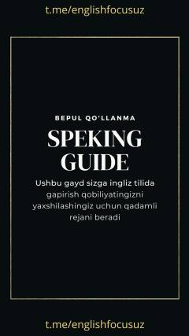

SGIngliz tilida so'zlashuv qobiliyatini rivojlantirish bo'yicha qadam-baqadam qo'llanma.
Ushbu qo'llanma ingliz tilida so'zlashuv qobiliyatini rivojlantirish uchun 60 kunlik reja va foydali maslahatlarni taqdim etadi. Kitobxonlar darajani aniqlash, resurslar tanlash va kundalik mashqlar orqali nutqini yaxshilashni o'rganadilar.